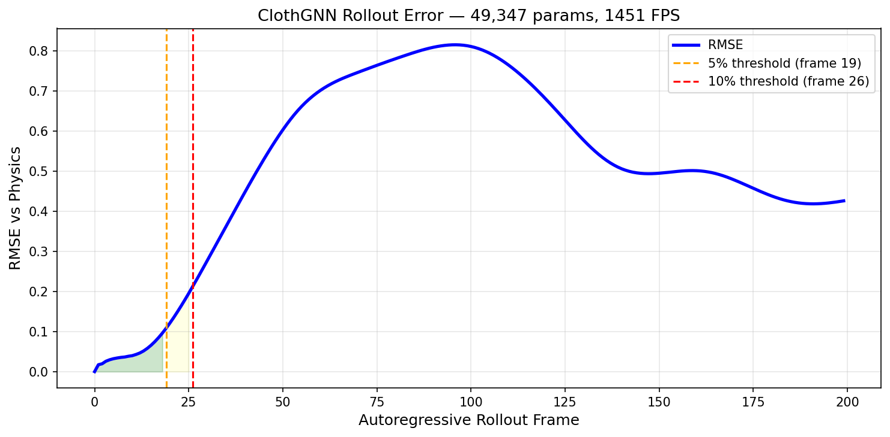
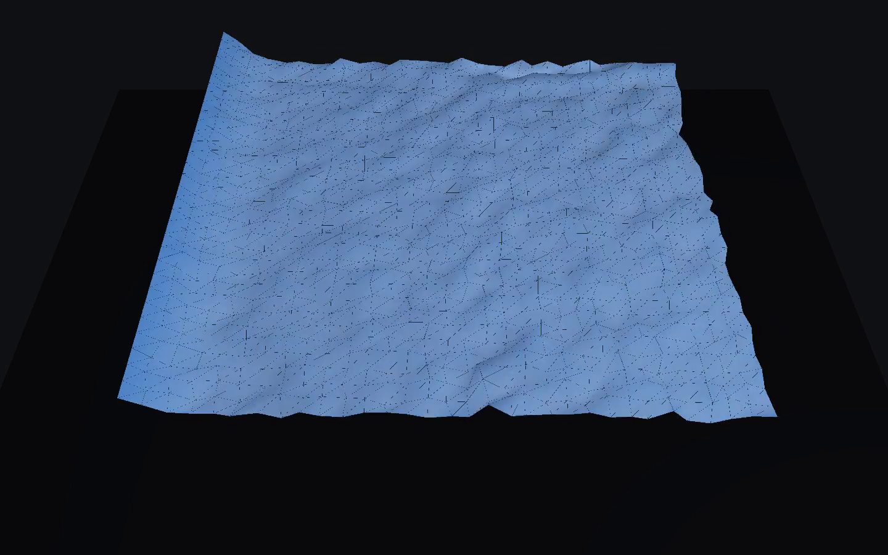
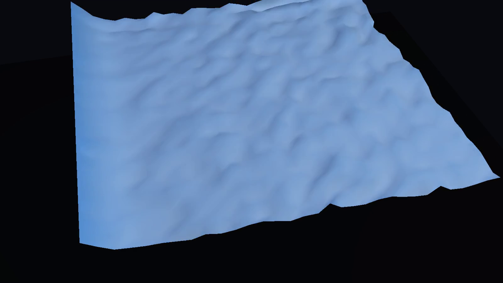
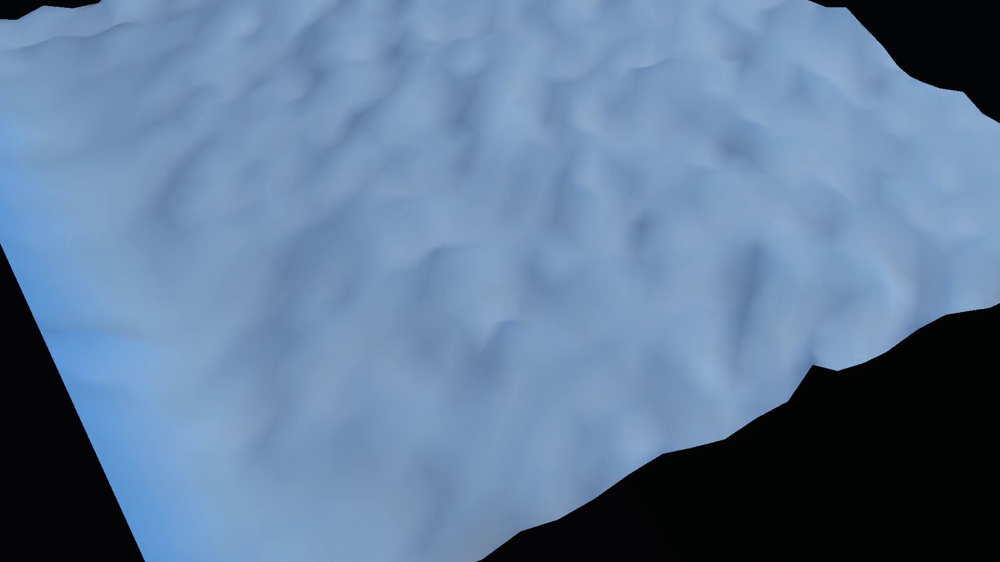

A 49K-parameter recurrent GNN predicting cloth dynamics at 1451 FPS — fast enough for real-time inner loops, not just offline approximation.
Both sequences use the same 32×32 cloth mesh (1024 vertices, fixed top edge). The left is the physics baseline. The right is the GNN rollout from the same initial state.
The headline number. ClothGNN replaces a multi-substep physics solver with a single neural network forward pass, running over 1400× faster than real-time at 30 FPS.
Honest numbers. The model is strong in the short-horizon window and degrades over longer autoregressive rollouts.

Three rendering presets showing the same GNN rollout frame from different perspectives and visual configurations.



49K parameters. The entire model fits in GPU L1 cache. No heavy transformer blocks, no attention layers — just message passing, a GRU, and a decoder.
1451 FPS means this model can serve as a real-time inner loop for cloth dynamics, not just an offline approximation. Fast enough for games, VR, and interactive tools.
The GNN operates on arbitrary graph structure. The same architecture works on any mesh resolution without retraining the network shape — only the data changes.
The autoregressive rollout degrades beyond ~19 frames at 5% error threshold. This is a short-horizon surrogate, best used where speed matters more than long-term accuracy.
Side-by-side: physics baseline (left) and ClothGNN rollout (right).